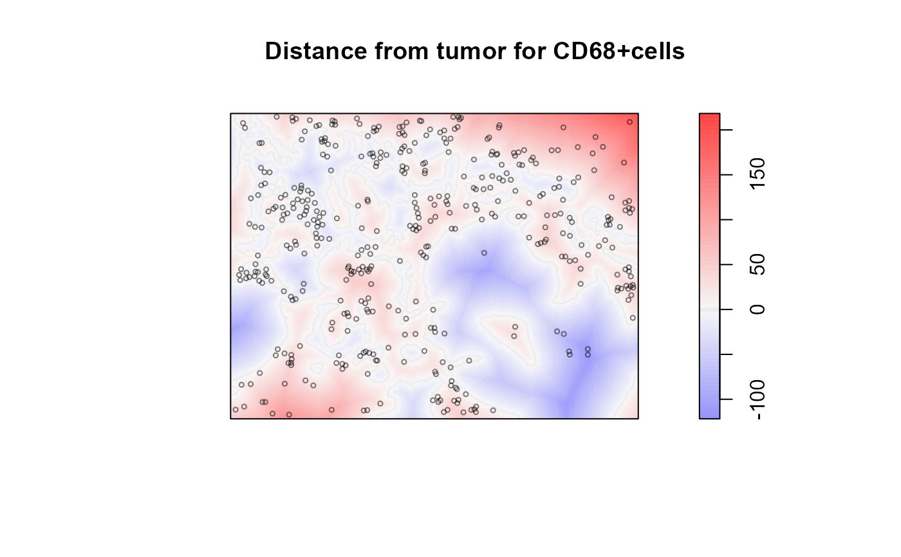

Estimate cell density at distance from a tissue boundary.
Given a cell seg table and an image containing masks for two tissue classes, estimate the dependence of the density of cells of each phenotype on the distance from the boundary between the two tissue classes.
density_at_distance(cell_seg_path, phenotypes, positive, negative, mask = FALSE, pixels_per_micron = getOption("phenoptr.pixels.per.micron"), ...)
Arguments
| cell_seg_path | Path to a cell segmentation data file. |
|---|---|
| phenotypes | Optional named list of phenotypes to process.
|
| positive | Name of the tissue category used as positive distance, e.g. "stroma". |
| negative | Name of the tissue category used as negative distance, e.g. "tumor". |
| mask | If true, compensate for edge effects by masking the image to exclude cells which are closer to the edge of the image than to the tissue boundary. |
| pixels_per_micron | Conversion factor to microns. |
| ... | Additional arguments passed to |
Value
Returns a list containing four items:
points |
The points used, marked with their phenotype,
a ppp.object. |
rhohat |
The density estimates (see Details). |
distance |
The distance map, a pixel image
(im.object). |
mask |
A mask matrix showing the locations which are closer to the tissue boundary than to the border or other regions. |
Details
The density estimate is computed by rhohat.
The signed distance from the boundary between the two tissue classes
is used as the covariate and density is estimated separately for each
phenotype.
The rhohat element of the returned list is a
list containing the results of the density
estimation for each phenotype. Each list value is a rhohat object,
see methods.rhohat. Density estimates are
in cells per square micron; multiply by 1,000,000 for cells per square
millimeter.
Edge correction
The rhohat function does not have any built-in
edge correction. This may lead to incorrect density estimates
because it does not account for cells at the edge of the image which may
be near a tissue boundary which is not part of the image.
The mask parameter, if set to TRUE, restricts the density estimation
to cells which are closer to the tissue boundary in the image than they are
to the edge of the image or any other tissue class.
For both mask==TRUE and mask==FALSE, the results tend to be unreliable
near the distance extremes because the tissue area at that distance
will be relatively small so random variation in cell counts is magnified.
Parallel computation
density_at_distance supports parallel computation using the
foreach-package. When this is enabled, the densities
for each phenotype will be computed in parallel. To use this feature,
you must enable a parallel backend, for example using
registerDoParallel.
References
A. Baddeley, E. Rubak and R.Turner. Spatial Point Patterns: Methodology and Applications with R. Chapman and Hall/CRC Press, 2015. Sections 6.6.3-6.6.4.
See also
Other distance functions: compute_all_nearest_distance,
count_touching_cells,
count_within_batch,
count_within, density_bands,
distance_matrix,
find_nearest_distance,
spatial_distribution_report,
subset_distance_matrix
Examples
# Compute density for the sample data values <- density_at_distance(sample_cell_seg_path(), list("CD8+", "CD68+", "FoxP3+"), positive="Stroma", negative="Tumor")#> Warning: executing %dopar% sequentially: no parallel backend registered# Combine all the densities into a single data_frame # and filter out the extremes library(tidyverse) all_rho <- purrr::map_dfr(values$rhohat, ~., .id='phenotype') %>% as_data_frame %>% filter(X>=-50, X<=100) # Plot the densities in a single plot library(ggplot2) ggplot(all_rho, aes(X, rho*1000000, color=phenotype)) + geom_line(size=2) + labs(x='Distance from tumor boundary (microns)', y='Estimated cell density (cells per sq mm)')# Show the distance map with CD68+ cells superimposed plot_diverging(values$distance, show_boundary=TRUE, title=paste('Distance from tumor for CD68+cells'), sub='Positive (blue) distances are away from tumor')plot(values$points[values$points$marks=='CD68+', drop=TRUE], add=TRUE, use.marks=FALSE, cex=0.5, col=rgb(0,0,0,0.5))